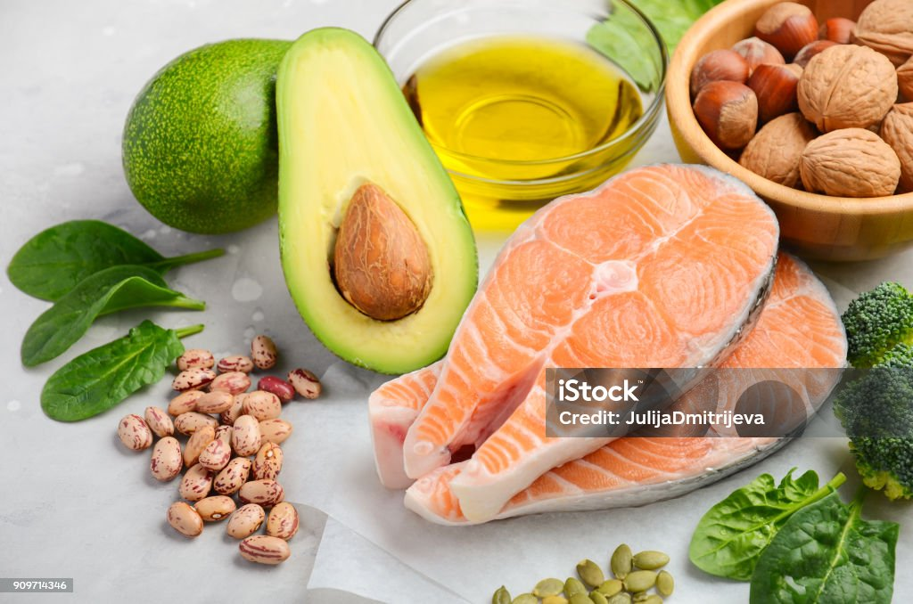

Grasas también se pueden denominar lípidos.
Están constituidos por un grupo de compuestos de naturaleza química variable, pero que tienen en común su insolubilidad en agua.
En los alimentos existen tres tipos de lípidos: fosfolípidos, ácidos grasos como el oleico, linoleico y linolénico; y grasas, formadas por la unión de una molécula de glicerina con tres ácidos grasos (triglicérido).
Los lípidos pueden contener ácidos grasos saturados e insaturados en su composición. Los saturados están presentes en alimentos de origen animal y algunos vegetales (palma y coco) y podrían ser, tomados en exceso, nocivos para la salud. Los insaturados están presentes en los animales marinos y en los vegetales, son mejores y convenientes para nuestro organismo.
En el organismo se almacenan en el tejido adiposo y nos permite tener períodos de ayuno a lo largo del día, al utilizarlos como fuente de energía endógena cuando las reservas de azúcares se han terminado.
Desde el punto de vista nutricional cumplen las siguientes funciones:
- Energética: cada gramo de grasa nos proporciona 9 kcal.
- Estructural: forman parte de las membranas celulares.
- Reguladora: actúan como vitaminas liposolubles y hormonas.
- Constituyen un aporte de ácidos grasos esenciales: oleico, linolénico y araquidónico, que el hombre no puede sintetizar.
- Permiten que los alimentos sean apetecibles. Una dieta con un contenido en grasa muy bajo no es comestible.